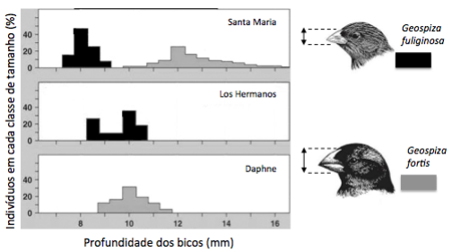

Censura moralista
Há tempos que a leitura está em pauta. E, diz-se, em crise. Comenta-se esta crise, por exemplo, apontando a precariedade das práticas de leitura, lamentando a falta de familiaridade dos jovens com livros, reclamando da falta de bibliotecas em tantos municípios, do preço dos livros em livrarias, num nunca acabar de problemas e de carências. Mas, de um tempo para cá, pesquisas acadêmicas vêm dizendo que talvez não seja exatamente assim, que brasileiros leem, sim, só que leem livros que as pesquisas tradicionais não levam em conta. E, também de um tempo para cá, políticas educacionais têm tomado a peito investir em livros e em leitura.
LAJOLO, M. Disponível em: www.estadao.com.br. Acesso em: 2 dez. 2013.
Os falantes, nos textos que produzem, sejam orais ou escritos, posicionam-se frente a assuntos que geram consenso ou despertam polêmica. No texto, a autora
Gabarito explicado: d) CORRETA. A autora começa por falar da suposta crise nas práticas de leitura e, num segundo momento, informa que as pesquisas acadêmicas levam a crer que tal crise não existe.
Questão 2
(Enem/2017)
Essas moças tinham o vezo de afirmar o contrário do que desejavam. Notei a singularidade quando principiaram a elogiar o meu paletó cor de macaco. Examinavam-no sérias, achavam o pano e os aviamentos de qualidade superior, o feitio admirável. Envaideci-me: nunca havia reparado em tais vantagens. Mas os gabos se prolongaram, trouxeram-me desconfiança. Percebi afinal que elas zombavam e não me susceptibilizei. Longe disso: achei curiosa aquela maneira de falar pelo avesso, diferente das grosserias a que me habituara. Em geral me diziam com franqueza que a roupa não me assentava no corpo, sobrava nos sovacos.
RAMOS, G. Infância. Rio de Janeiro: Record, 1994.
Por meio de recursos linguísticos, os textos mobilizam estratégias para introduzir e retomar ideias, promovendo a progressão do tema. No fragmento transcrito, um novo aspecto do tema é introduzido pela expressão
Gabarito explicado: d) CERTA. Os elogios que as mulheres faziam ao paletó do homem eram, na verdade, irônicos. Quando ele percebeu isso, em vez de ficar ressentido, achou curiosa a ironia das moças: “Longe disso: achei curiosa aquela maneira de falar pelo avesso”.
Questão 4
O Ateneu
Leia as duas citações a seguir, extraídas do início e do final de O Ateneu:
“Lembramo-nos, entretanto, com saudade hipócrita, dos felizes tempos; como se a mesma incerteza de hoje, sob outro aspecto, não nos houvesse perseguido outrora e não viesse de longe a enfiada das decepções que nos ultrajam. Eufemismo, os felizes tempos, eufemismo apenas, igual aos outros que nos alimentam, a saudade dos dias que correram como melhores.
Bem considerando, a atualidade é a mesma em todas as datas. Feita a compensação dos desejos que variam, das aspirações que se transformam, alentadas perpetuamente do mesmo ardor, sobre a mesma base fantástica de esperanças, a atualidade é uma (...)”.
“Aqui suspendo a crônica das saudades. Saudades verdadeiramente? Puras recordações, saudades talvez, se ponderarmos que o tempo é a ocasião passageira dos fatos, mas sobretudo — o funeral para sempre das horas.”
(POMPEIA, Raul. O Atheneu (Chronica de saudades). Rio de Janeiro: Tipografia de Gazeta de Notícias, p 3-4 e 368, 1888.)
Com base nessas duas citações, é possível afirmar que, ao fim da narrativa de Sérgio sobre sua vida no colégio, o narrador
Questão 5
Enem 2017
A causa secreta
Garcia tinha-se chegado ao cadáver, levantara o lenço e contemplara por alguns instantes as feições defuntas. Depois, como se a morte espiritualizasse tudo, inclinou-se e beijou-a na testa. Foi nesse momento que Fortunato chegou à porta. Estacou assombrado; não podia ser o beijo da amizade, podia ser o epílogo de um livro adúltero [...].
Entretanto, Garcia inclinou-se ainda para beijar outra vez o cadáver, mas então não pôde mais. O beijo rebentou em soluços, e os olhos não puderam conter as lágrimas, que vieram em borbotões, lágrimas de amor calado, e irremediável desespero. Fortunato, à porta, onde ficara, saboreou tranquilo essa explosão de dor moral que foi longa, muito longa, deliciosamente longa.
ASSIS, M. A causa secreta. Disponível em: www.dominiopublico.gov.br. Acesso em: 9 out. 2015.
No fragmento, o narrador adota um ponto de vista que acompanha a perspectiva de Fortunato. O que singulariza esse procedimento narrativo é o registro do(a)
Gabarito explicado: D) CORRETA. A primeira vez que Fortunato é mencionado no texto é o momento em que ele, chegando à porta, fica surpreso ao ver como Garcia beija a defunta.
Questão 6
Enem 2017
João/Zero (Wagner Moura) é um cientista genial, mas infeliz porque há 20 anos atrás foi humilhado publicamente durante uma festa e perdeu Helena (Alinne Moraes), uma antiga e eterna paixão. Certo dia, uma experiência com um de seus inventos permite que ele faça uma viagem no tempo, retornando para aquela época e podendo interferir no seu destino. Mas quando ele retorna, descobre que sua vida mudou totalmente e agora precisa encontrar um jeito de mudar essa história, nem que para isso tenha que voltar novamente ao passado. Será que ele conseguirá acertar as coisas?
Disponível em: http://adorocinema.com. Acesso em: 4 out. 2011.
Qual aspecto da organização gramatical atualiza os eventos apresentados na resenha, contribuindo para despertar o interesse do leitor pelo filme?
Gabarito explicado: D) CORRETA. O fato de descrever algo que aconteceu, mas utilizar verbos no presente, desperta interesse nas pessoas (“Mas quando ele retorna, descobre que sua vida mudou totalmente”).
Questão 7
(Unicamp 2014)
Os diagramas abaixo ilustram a frequência percentual de indivíduos com diferentes tamanhos de bico, para duas espécies de tentilhões (gênero Geospiza) encontradas em três ilhas do arquipélago de Galápagos, no oceano Pacífico. As frequências de indivíduos com bicos de diferentes profundidades (indicadas pelas setas) são mostradas para cada espécie, em cada ilha. Sabendo-se que ambas as espécies se alimentam de sementes, indique a interpretação correta para os resultados apresentados.

Adaptado de Pianka, E.R. Evolutionary Ecology. Harper & Row, Publishers, New York, 397 pp. 1978. Em: http://goose.ycp.edu/~kkleiner/ecology/lectureimages/15finches.jpg
Gabarito explicado: B) Trata-se de um exemplo de deslocamento de caracteres resultante de competição entre as duas espécies na situação de simpatria.